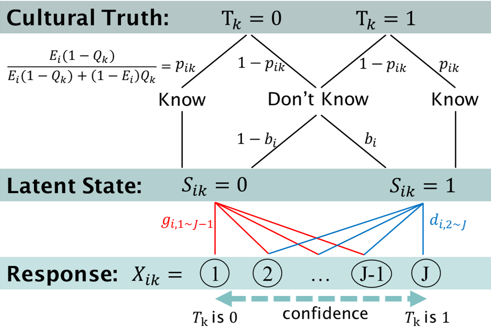

Incorporating threshold theory into the cultural consensus theory for ordinal categorical data: A simulation study
1 Department of Psychology, National Taiwan University
Introduction
Cultural consensus theory (CCT)
- A cognitively-driven information-pooling approach to assess informants’ consensus (Batchelder et al., 2018).
- The “culturally correct” answers are unknown a priori.
- Originally aims at analyzing data consisting of binary responses (Batchelder & Romney, 1988; Romney et al., 1986).
Threshold theory
- Distinguish between sensory-based thresholds and decision-based response biases (Krantz, 1969; Luce, 1963).
Objectives
- Incorperate threshold theory into the CCT framework for ordinal categorical responses.
- Estimate items’ and informants’ parameters by using hierarchical Bayesian modeling.
- Check the single (consensus) truth assumption.
General-Condorcet-Luce-Krantz (GCLK) Model
\(X_{ik} = j\): the \(i\)th informant answers the \(j\)th confident response on the \(k\)th item. (\(i \in \{1,\dots,N\}, j \in \{1,\dots,J\}, k \in \{1,\dots,M\}\))

- \(p_{ik}\), the probability of knowing the answer, is a function of item’s difficulty \(Q_k\) and informant’s competence \(E_i\);
- \(b_i\) is a sensory bias;
- \(\boldsymbol{g}_i \; \& \; \boldsymbol{d}_i\) are response criteria (resp.) at latent state \(S_{ik}\).
Simulation Procedure

Results

Discussion
- The GCLK model was developed to account for informant-by-item ordinal response data where items’ consensus truth is unknown a priori.
- Our simulation results show that the hierarchical Bayesian approach can get a strong recovery for the true parameters in the GCLK model.
- The consensus answers estimated by the GCLK model are more close to the true values than simply calculating the average over individual responses for each item.
- Follow-up study: Apply the GCLK model to real data (e.g. Likert-type questionnaire).
References
Batchelder, W. H., Anders, R., & Oravecz, Z. (2018). Cultural consensus theory. In E.-J. Wagenmakers (Ed.), Stevens’ handbook of experimental psychology and cognitive neuroscience (4th ed., Vol. 5, pp. 201–264). Wiley.
Batchelder, W. H., & Romney, A. K. (1988). Test theory without an answer key. Psychometrika, 53(1), 71–92.
Krantz, D. H. (1969). Threshold theories of signal detection. Psychological Review, 76(3), 308–324.
Luce, R. D. (1963). A threshold theory for simple detection experiments. Psychological Review, 70(1), 61–79.
Romney, A. K., Weller, S. C., & Batchelder, W. H. (1986). Culture as consensus: A theory of culture and informant accuracy. American Anthropologist, 88(2), 313–338.
An extension of test theory without an answer key
 Our model can estimate the correct answers much more accurately by weighting on the informants’ responses.
Our model can estimate the correct answers much more accurately by weighting on the informants’ responses.